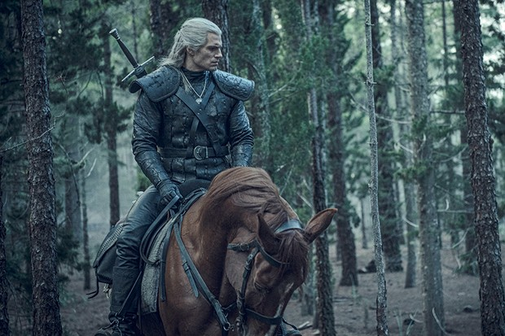

Set on a fictional, medieval-inspired landmass known as "the Continent", The Witcher explores the legend of Geralt of Rivia and princess Ciri, who are linked by destiny to each other. The witcher introduces many characters throughout its stories such as, Geralt of Rivia, princess Ciri, Jaskier the bard, and Yennefer of Vengerberg.
You can experience The Witcher universe in many different ways! Most of you have probably heard of the Netflix series with Henry Cavill playing Geralt of Rivia. There are some other ways to experience this detailed universe such as:
The Witcher's main purpose is to hunt down and defeat creatures that terrorise the land. Witchers are genetically mutated with medieval science and magic as children to make them smarter, faster, stronger, and able to take alchemical solutions to dangerous for normal people. These are some of the monsters that Witchers hunt ranked from least dangerous to most dangerous.
Take the Quiz to get a score!